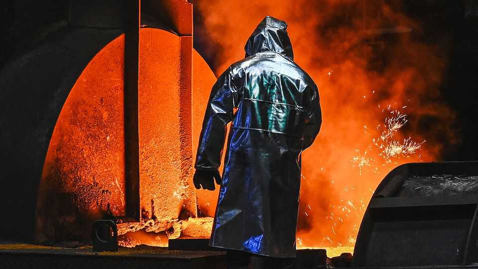
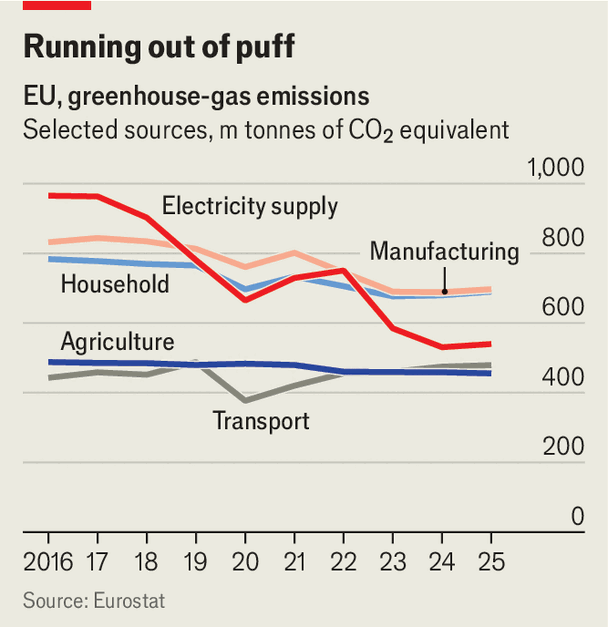

Europe seems set to ease its carbon pricing
Green goals are running into fears about competitiveness
July 16th 2026

THE EUROPEAN UNION’s carbon price is an economist’s dream. The bloc’s emissions-trading scheme (ETS) distributes rights to emit greenhouse gases to firms in electricity generation, heavy industry and aviation. Then it lets the market do the rest. It was phased in gradually, with all kinds of cushioning such as free allowances (not all of them justified) to give emitters plenty of time to adjust. Now, however, the system is starting to bite, which makes it a perfect scapegoat for politicians struggling to contain soaring energy prices and to shield struggling industries from global competition.
On July 17th the European Commission is expected to reveal a watering down of the ETS amid worries that, since it is essentially a tax, it is hampering European competitiveness. Auctioning carbon allowances brought in around €40bn ($46bn) to the EU and its members in 2024.
In March, ten EU member states, including Italy, Poland and Romania, urged the commission to conduct a thorough review of the scheme with an eye to helping electricity consumers and industry. Friedrich Merz, Germany’s chancellor, worried that his country’s manufacturing sector was wavering: “We should be very open to revise it, or at least to postpone it.” Since then, the commission has worked on a plan that tries to reconcile its contradictory goals of cutting greenhouse gas emissions while allowing the bloc’s industries to compete—all without breaching international trade rules.
Industry’s gripe is that it now costs about €80 to emit a tonne of carbon, and that price is expected to climb. This adds roughly three cents to the price of a gas-powered kWh (or about 10% to the retail price of power) and €11 to the ticket price for a three-hour flight. Almost all allowances for electricity generation and airlines have to be bought in auctions. Some industries that are exposed to international markets and high emission costs still receive many free allowances, as long as they continue to produce. That has shielded them from the impact of the carbon price. In fact, some companies in industries like metals and paper receive allowances for more greenhouse gases than they emit, says Bruegel, a Brussels-based think-tank, resulting in a handsome profit.
The EU has brought in a tax called the Carbon Border Adjustment Mechanism (CBAM). Importers of energy-intensive goods like steel or fertiliser must pay the EU’s emissions price on the carbon embedded in the imported good, unless the country of origin has its own carbon-pricing scheme. But the EU cannot go on giving its own producers free allowances without flouting international trade rules. As CBAM payments are phased in until 2034, free allowances will be phased out.
The switch from free allowances to CBAM will leave one large gap: exports. Inside the European market, all producers, domestic or foreign, will have to pay a carbon price. But when competing in export markets, EU producers will be the only ones paying it, leaving them at a disadvantage. Worse still, exempting exports from the carbon price would be considered an export subsidy that breaches WTO rules.

One workaround could be to provide export credits for green goods, says George Riddell of Goyder, a trade consultancy. “Those would help competitive European players, but not those that are currently screaming the loudest.” There is also a plan to offer free allowances conditional on green investment.
The biggest effect on the carbon price will come from how many allowances are issued. The EU will have to greatly reduce the number to meet its climate target. That would tend to drive up the carbon price. Yet allowing industry to emit more would put added pressure on domestic heating, farming and transport to reduce their emissions, which is politically even harder (see chart).
It would also hurt firms that have invested in greener processes believing the rules would not be tweaked to suit polluters. “The jury is still out on whether Europe can be a winner of the megatrend of sustainability,” says Stefan Kvarfordt of the Confederation of Swedish Enterprise. ■
To stay on top of the biggest European stories, sign up to Café Europa, our weekly subscriber-only newsletter.